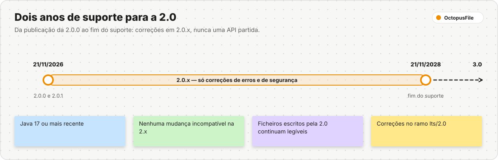
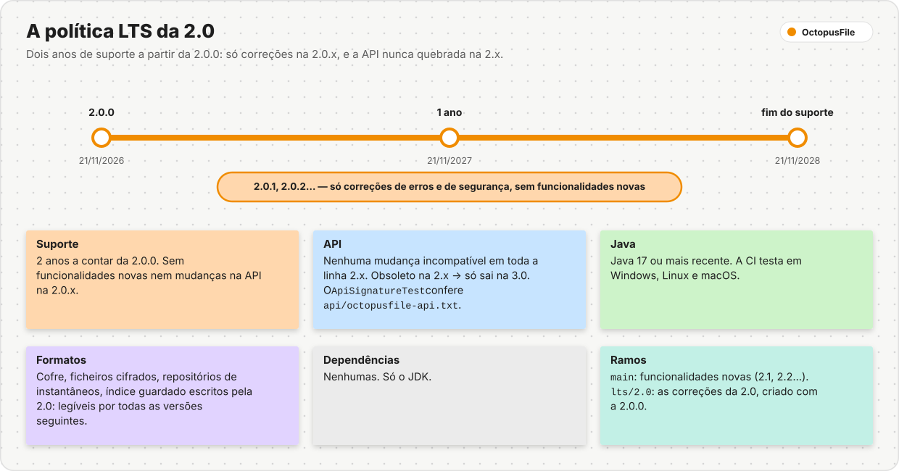
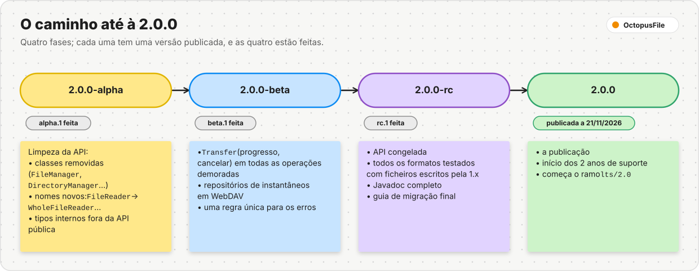
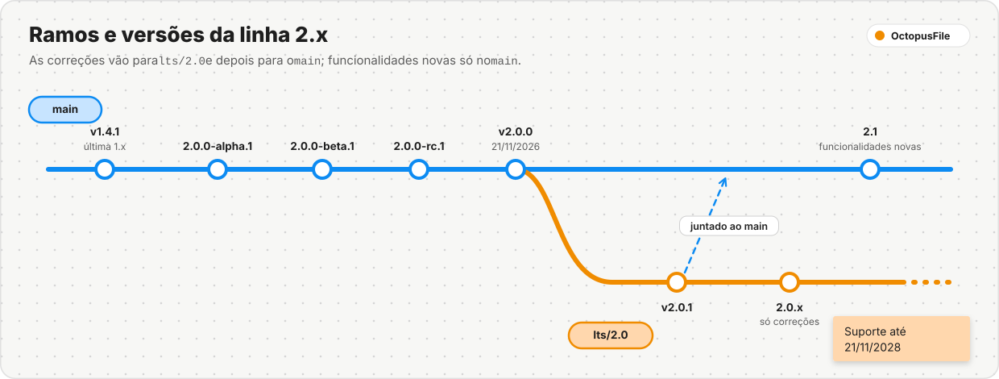
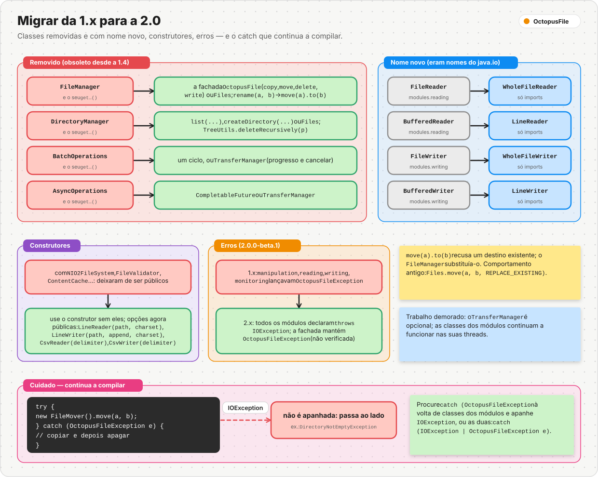
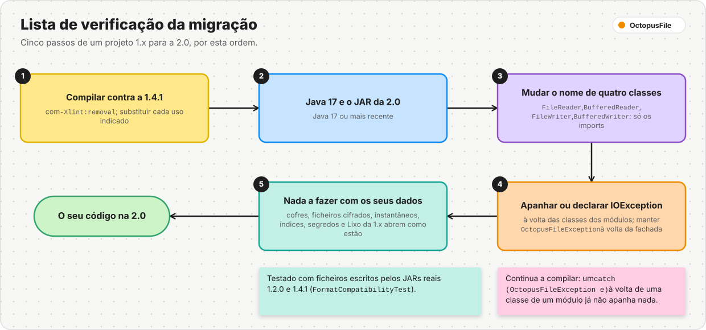
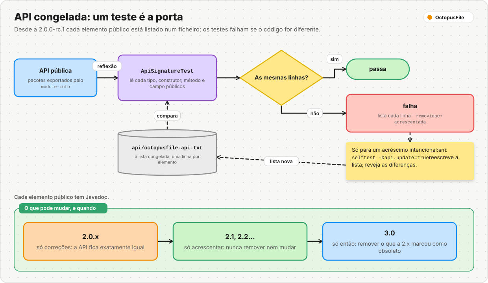
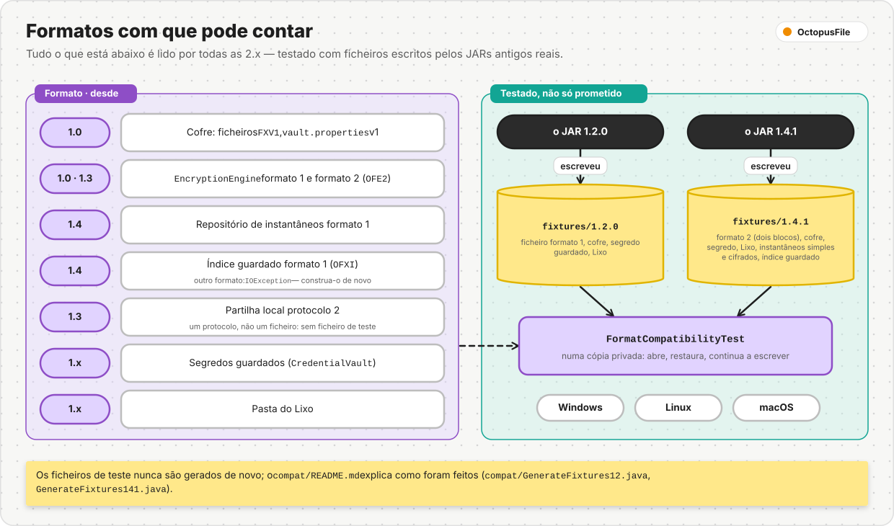

OctopusFile 2.0 (LTS)

O OctopusFile 2.0 é a versão oficial com suporte de longa duração (LTS). A 2.0.0 foi publicada a 21 de novembro de 2026; tem suporte até 21 de novembro de 2028. A versão atual aparece no fundo de cada página deste site.
A política LTS#

| Suporte | 2 anos a contar da publicação da 2.0.0: versões 2.0.x só com correções de erros e de segurança — sem funcionalidades novas nem mudanças na API |
| API | nenhuma mudança incompatível em toda a linha 2.x; o que for marcado como obsoleto na 2.x só sai na 3.0. Um teste (ApiSignatureTest) compara cada tipo, construtor, método e campo públicos com a lista congelada api/octopusfile-api.txt, por isso uma mudança não entra numa 2.0.x por acidente |
| Java | Java 17 ou mais recente; testado em Windows, Linux e macOS pela CI |
| Formatos | tudo o que a 2.0 escrever (cofre, ficheiros cifrados, repositórios de instantâneos, índice guardado) continua legível por todas as versões seguintes |
| Dependências | nenhumas |
| Ramos | as funcionalidades novas continuam no main (2.1, 2.2…); as correções da 2.0 vão para o ramo lts/2.0, criado com a 2.0.0 |
Fases#

| Fase | O quê | Estado |
|---|---|---|
| 2.0.0-alpha | Limpeza da API: classes removidas, nomes, tipos internos fora da API pública | alpha.1 feita |
| 2.0.0-beta | Transfer (progresso, cancelar) em todas as operações demoradas; repositórios de instantâneos em WebDAV; uma regra única para os erros | beta.1 feita |
| 2.0.0-rc | API congelada; testes de todos os formatos com ficheiros escritos pela 1.x; Javadoc completo; guia de migração final | rc.1 feita |
| 2.0.0 | publicação; início dos 2 anos de suporte | publicada a 21/11/2026 |
Versões 2.0.x#

Versões de correção da 2.0, feitas no ramo lts/2.0. Cada uma só corrige; a API fica exatamente igual.
| Versão | Data | O quê |
|---|---|---|
| 2.0.4 | 21/11/2026 | As duas últimas conclusões da auditoria: copiar uma pasta para cima de outra já não substitui ficheiros sem pedir (recusa antes de copiar o que quer que seja), e GlobalConfiguration.setIsOverwriteByDefault(true) passa a fazer mesmo as cópias e os movimentos substituírem |
| 2.0.3 | 21/11/2026 | 65 correções de uma auditoria completa com uma reprodução para cada erro, antes de a 2.0 entrar no FileExp: uma regra nova — nenhuma travessia entra num link ou junction NTFS (apagar uma pasta apagava o que a junction apontava); cópias que não perdem o ficheiro substituído; cofre, Lixo, sincronização, transferências, instantâneos e ZIP protegidos contra perda de dados (ver o CHANGELOG) |
| 2.0.2 | 21/11/2026 | 3 correções e um Javadoc corrigido, encontrados ao ilustrar todas as páginas: write(…).bytes(…) sobre um ficheiro maior já não deixa o fim antigo, onOverflow funciona com um filtro de extensão, watch(…).start() avisa logo quando a pasta não existe; a documentação tem ilustrações em todas as páginas e capítulos |
| 2.0.1 | 21/11/2026 | 14 correções encontradas ao documentar todas as classes: palavra-passe SMB fora da linha de comandos no Windows, o Lixo nunca perde uma pasta apagada só em parte, Vault.delete/rename seguros, FileWatcher(Path), CsvReader.readCsv com aspas, e outras menores (ver o CHANGELOG) |
2.1 — funcionalidades novas no main#
A 2.1 é a primeira versão menor da linha 2.x. Só acrescenta: nenhum tipo, método, campo ou construtor público foi removido ou alterado (o ApiSignatureTest mostra só linhas acrescentadas), e tudo o que a 2.0 escreveu continua legível. É construída no main; o lts/2.0 continua só com as correções 2.0.x.
| Versão | Data | O quê |
|---|---|---|
| 2.1.0 | 2026-11-22 | Versões de um ficheiro num repositório de instantâneos e repor uma delas; pausar e retomar transferências (Transfer.State.PAUSED); backup(…).toDefault() usa a pasta de cópias por omissão; sincronizar pastas entre dois computadores na rede local |
Duas coisas a saber ao passar da 2.0 para a 2.1: um switch sobre Transfer.State sem default deve ganhar um caso PAUSED, e um handler Incoming do LanShare só vê sincronizações quando o computador foi iniciado com a sincronização ligada.
Migrar da 1.x#

Código que compilava na 1.4 sem avisos de remoção só precisa das mudanças de nome abaixo. Para encontrar os usos, compile contra a 1.4 com -Xlint:removal.
Removido (obsoleto desde a 1.4):
| Removido | Use em vez disso |
|---|---|
FileManager, OctopusFile.getFileManager() | a fachada OctopusFile (copy, move, delete, write) ou java.nio.file.Files; rename(a, b) → move(a).to(b). Atenção: FileManager.move/rename substituíam um destino existente, move(a).to(b) recusa-o (use Files.move(a, b, REPLACE_EXISTING) para manter o comportamento antigo) |
DirectoryManager, getDirectoryManager() | OctopusFile.list(...), createDirectory(...) ou Files; deleteDirectoryRecursively(p) → TreeUtils.deleteRecursively(p) (modules.utils; não faz nada quando p não existe, como antes) |
BatchOperations, getBatchOperations() | um ciclo, ou TransferManager para trabalho demorado com progresso e cancelamento |
AsyncOperations, getAsyncOperations() | CompletableFuture ou TransferManager |
Nomes novos (os antigos eram iguais a classes do java.io):
| 1.x | 2.0 |
|---|---|
modules.reading.FileReader | modules.reading.WholeFileReader |
modules.reading.BufferedReader | modules.reading.LineReader |
modules.writing.FileWriter | modules.writing.WholeFileWriter |
modules.writing.BufferedWriter | modules.writing.LineWriter |
Construtores com tipos internos (NIO2FileSystem, FileValidator, ContentCache, …) deixaram de ser públicos em FileCopier, FileMover, FileRenamer, FileDeleter, FileWatcher, WatchService e nos leitores e escritores. Use o construtor sem esses argumentos. As opções que eles davam passaram a ser públicas por si: LineReader(path, charset), LineWriter(path, append, charset), CsvReader(delimiter), CsvWriter(delimiter).
Erros (2.0.0-beta.1, a regra para toda a linha 2.x): a fachada OctopusFile lança OctopusFileException (não verificada); todos os módulos declaram IOException — consulte Erros. Os módulos manipulation, reading, writing e monitoring lançavam OctopusFileException na 1.x: os seus métodos declaram agora throws IOException, por isso o código que os chama tem de a apanhar ou declarar. LineReader.lines() lança UncheckedIOException dentro do stream, como BufferedReader.lines().
Cuidado — continua a compilar: um
catch (OctopusFileException e)à volta de uma classe de um módulo (por exemplonew FileMover().move(a, b)) compila na 2.x quando o método já declaraIOException, mas deixa de apanhar o erro: agora chega comoIOException. Procurecatch (OctopusFileExceptionno seu código e, onde otrychama uma classe de um módulo em vez da fachada, apanheIOException(ou as duas:catch (IOException | OctopusFileException e)). Por exemplo, mover uma pasta para outra unidade dáDirectoryNotEmptyException; código que recorria a "copiar e depois apagar" peranteOctopusFileExceptiontem agora de o fazer perante essa exceção.
Operações demoradas (2.0.0-beta.1): o TransferManager executa cópias, movimentos, instantâneos, restauros, envio e receção da nuvem, pesquisa no conteúdo, indexação e procura de duplicados numa fila única. Cada chamada devolve um Transfer com progresso, cancel() e, quando termina, getResult(). Código que na 1.x as executava nas suas próprias threads pode continuar assim (as classes dos módulos funcionam sozinhas) ou passar para a fila.
Lista de verificação#

- Compile o seu código contra a 1.4.1 com
-Xlint:removale substitua cada uso indicado (tabelas acima). - Passe para Java 17 ou mais recente e para o JAR da 2.0.
- Mude o nome de
FileReader,BufferedReader,FileWriter,BufferedWriterdecom.octopusfile(só os imports). - Onde o compilador pedir, apanhe ou declare
IOExceptionà volta das classes dos módulos; continue a apanharOctopusFileExceptionà volta da fachadaOctopusFile. - Nada a fazer com os seus dados: cofres, ficheiros cifrados, repositórios de instantâneos, índices guardados, segredos guardados e o Lixo escritos pela 1.x abrem como estão (ver abaixo).
API congelada#

A partir da 2.0.0-rc.1 a API pública está congelada. Cada tipo, método e campo público dos pacotes exportados está listado em api/octopusfile-api.txt, e os testes falham se o código for diferente. Até à 2.0.0 só entram correções; durante os 2 anos de suporte, as versões 2.x só podem acrescentar à API, nunca remover ou mudar. Cada elemento público tem Javadoc.
Formatos com que pode contar#

| Formato | Desde | Lido pela 2.x |
|---|---|---|
Cofre (ficheiros FXV1, vault.properties versão 1) | 1.0 | sim |
EncryptionEngine formato 2 (OFE2) e formato 1 | 1.3 / 1.0 | sim |
| Repositório de instantâneos formato 1 | 1.4 | sim |
| Índice guardado formato 1 | 1.4 | sim; um ficheiro de outro formato dá uma IOException (construa o índice de novo) |
| Partilha local protocolo 2 | 1.3 | sim |
Segredos guardados (CredentialVault) | 1.x | sim |
| Pasta do Lixo | 1.x | sim |
Isto é testado, não só prometido: selftest/fixtures guarda ficheiros escritos pelos JARs reais 1.2.0 e 1.4.1 (ficheiros cifrados dos formatos 1 e 2, cofres, segredos guardados, Lixo, repositórios de instantâneos simples e cifrados, um índice guardado), e o FormatCompatibilityTest abre, restaura e continua a escrever em cópias deles em Windows, Linux e macOS. Os ficheiros de teste nunca são gerados de novo; o compat/README.md explica como foram feitos.